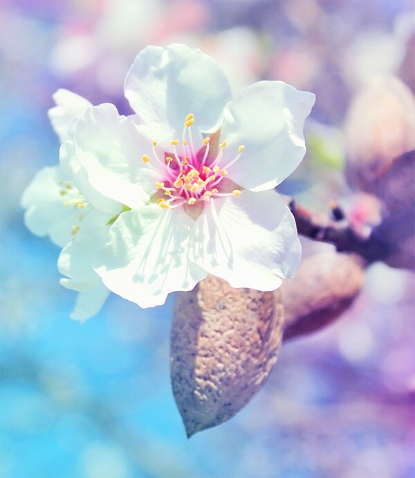
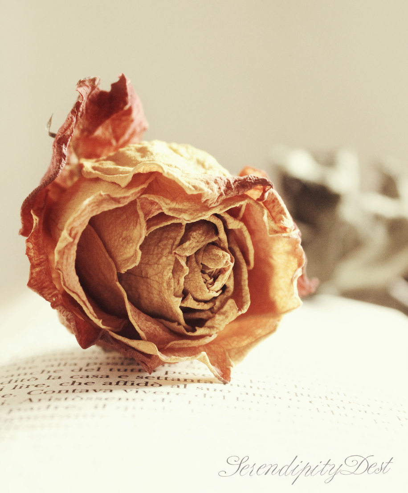
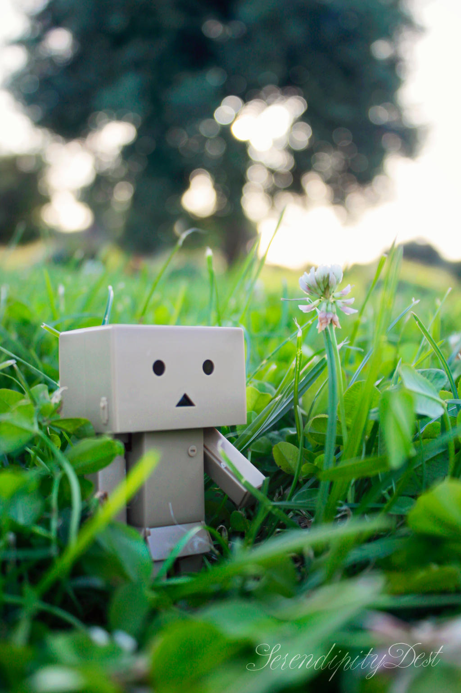
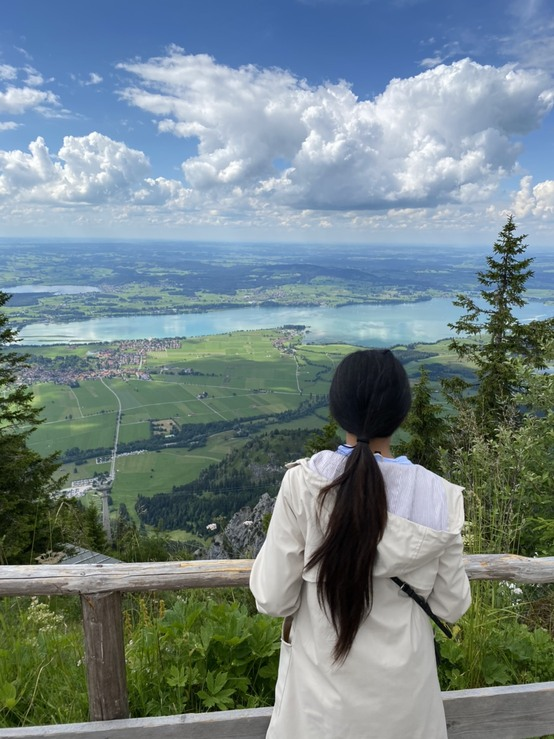
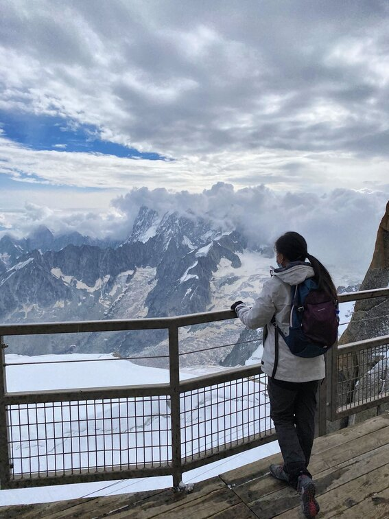
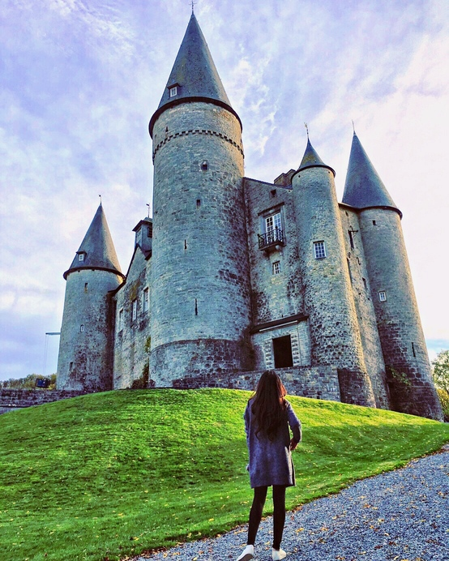
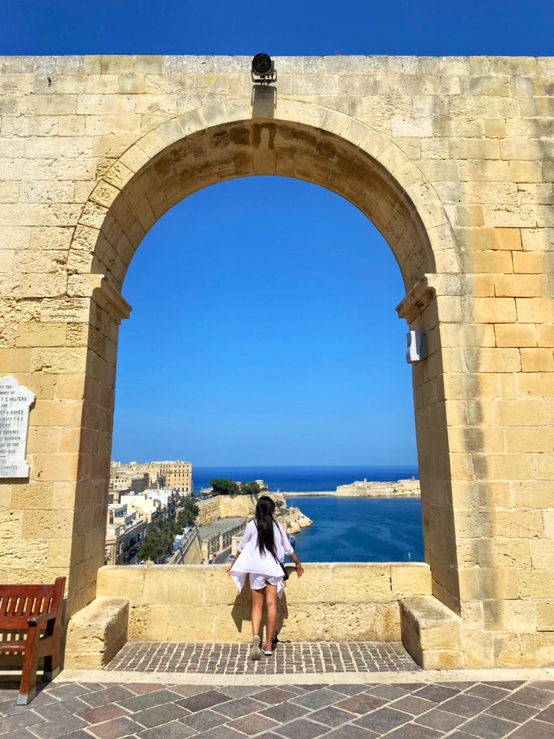
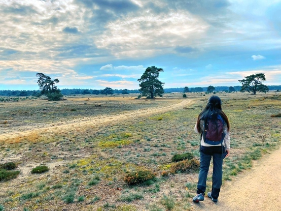
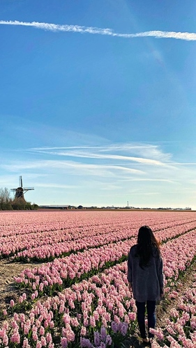

Still-life photography
I love taking photos of Still-life
Please feel free to visit MY GALLERY



Sehnsucht
In my heart i have always longed for the travels that i have made and destinations i have yet to discover in the near future.
For me the most beautiful thing about travel is that it reminds me to appreciate the things that are most important to life.





